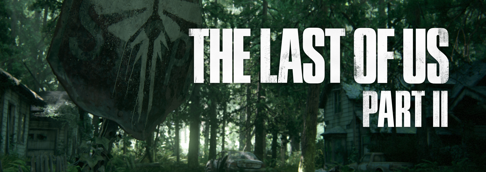
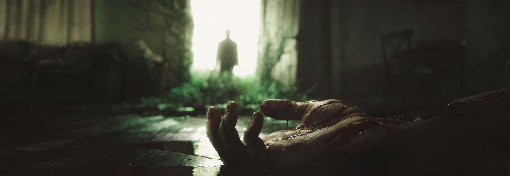

За жанром, Days Gone є пригодницьким бойовиком у поєднанні із survival horror, встановлена в постапокаліптичному відкритому світі, а керування персонажем здійснюється від третьої особи. Головний герой Дикон Сент-Джон, бродяга та мисливець за головами, який віддає перевагу життю на шляху до пустель.[1] Гра відбувається через два роки після того, як відбулася глобальна пандемія, яка вбила майже все людство, і трансформувала мільйони інших в «Freakers», бездушних зомбі-істот, які швидко розвиваються.[1] На демонстраційному етапі E3 2016 з'явилися два типи "Freakers", Newts і Hordes. На демонстраційному етапі E3 2017 стало відомо, що інфіковані тварини, такі як ведмеді та вовки, також є "Freakers" і ворогами для вцілілого людства.
Гравець може виконувати цілі кількома способами, наприклад, за допомогою прихованої або довгої та короткої зброї. Динамічна система погоди та цикл день-ніч також покажуть, що робить "Freakers" слабкими й повільними вдень, але швидкими й сильними вночі. Основним транспортним засобом Дикона є мотоцикл, який можна модифікувати для підвищення його швидкості, довговічності або маневровості. Гравець здатний створювати нові предмети для поліпшення бойової ефективності. Гра була офіційно анонсована 13 червня 2016 року на виставці E3 2016. Days Gone став першим великим проєктом SIE Bend Studio за багато років, який розроблявся безпосередньо для консолі восьмого покоління на ігровому движку Unreal Engine 4. Розробку гри очолив креативний директор Джон Гарвін і геймдиректор Джефф Росс.
| Номер | Назва Персонажів | Особливості |
|---|---|---|
| 1. | Дикон Сент-Джон | Екслюзивний персонаж бродяга та мисливець за головами, який віддає перевагу життю на шляху до пустель. |
| 2. | Фріки | Зомбі-істоти, стало відомо, що інфіковані тварини, такі як вовки, також є фріками і ворогами для вцілілого людства. |
| 3. | Світ | В Days Gone величезна карта світу. На карті 6 регіонів: Каскади, Белкнап, Лост-Лейк, Айрон-Бьютт, Кретер-Лейк, Хайвей 97. |
| 4. | Байк | В Days Gone основним транспортним засобом є байк. Завдяки йому ви можете швидко долати великі відстані. |

відеогра жанру action-adventure з елементами survival horror і стелс-екшену від третьої особи. Розроблена Naughty Dog і видана Sony Interactive Entertainment ексклюзивно для ігрової консолі PlayStation 4 . Це друга частина серії і пряме сюжетне продовження гри The Last of Us. Однією з провідних особливостей в грі також є надання гравцям численних варіантів кожного бою. Конфронтація — не єдиний спосіб пройти гру, у гравців також є можливість відступити, при цьому на кожному рівні є спеціальні місця для відступу. За заявою розробників, в грі відсутні безпечні місця.
Дія гри відбувається через 5 років після подій першої частини і через 25 років після глобальної катастрофи — пандемії, викликаної мутацією грибка кордицепсу на території колишніх Сполучених Штатів Америки. Згідно з сюжетом гри, основна частина серії буде мати місце в Сіетлі, а починатися в Джексоні[3]. Головною героїнею є дівчина Еллі, якій на момент подій сиквела виповнилося 19 років. Джоел — протагоніст оригінальної частини, виступає персонажем другого плану й фігурує на початку[4]. Основною темою другої частини серії є ненависть і її подолання, на відміну від першої, де основна тема будувалася навколо любові, в конкретному випадку між Еллі та Джоелом[4].

| Номер | Назва Персонажів | Особливості |
|---|---|---|
| 1. | Еллі | головна героїня, дев'ятнадцятирічний підліток. Вона має імунітет до небезпечного вірусу, який став причиною апокаліпсису і кинув людство в жах. |
| 2. | Джоел | головний герой The Last of Us, відчайдушний контрабандист, який намагається вижити в постапокаліптичному світі. |
| 3. | Діна | молода дівчина, подруга Еллі. Вона в усьому підтримує головну героїню і допомагає їй позбутися від поганих думок. |
| 4. | Джессі | молодий хлопець, який належить до громади американського містечка Джексон. Він спочатку зустрічається з Діною, але пізніше розлучається з нею. |
В Last of us II огромная карта мира. На карте більше 30 регионов, і це тільки четверть карти всієї гри. Зачистка засадных лагерей засады является рекомендуемым методом. Вы достигаете новых регионов в ходе прогресса истории. Вы не можете получить доступ к полной карте с самого начала. После прохождения вы можете вернуться во все регионы в свободном перемещении, чтобы завершить оставшиеся лагеря, предметы коллекционирования и любые другие задачи. Важно отметить, что во время истории есть временные точки, в которые невозможно вернуться, но в конце игры вся карта открывается.
Мене звати Ян